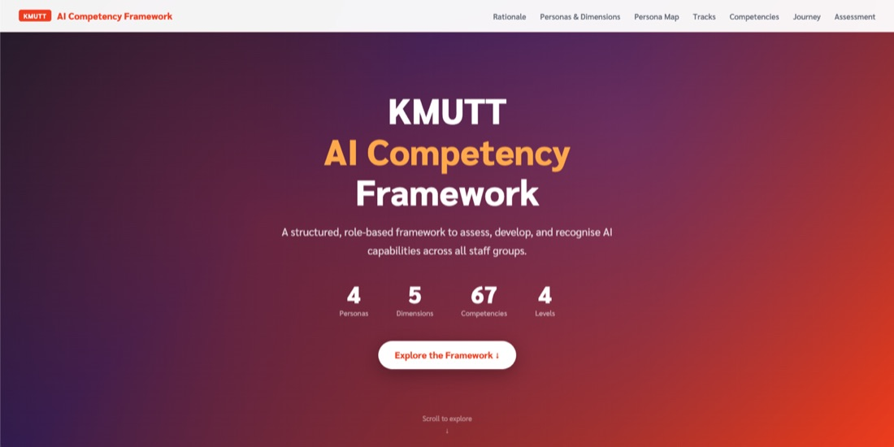
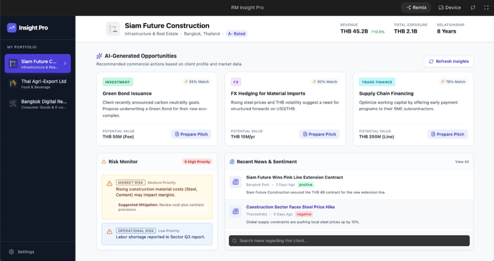

สร้างชิ้นงานด้วย AI¶
หน้าสุดท้าย — และเป็นบทสรุปของหลักการที่ใช้มาตลอดทั้ง 7 หน้าก่อนหน้า:
ไม่ได้เลือกเครื่องมือจากความคุ้นเคย แต่เลือกจากสิ่งที่จะได้ออกมา
การ์ด · เว็บไซต์ · แอปพลิเคชัน · วิดีโอ — สี่ประเภทงาน สี่เครื่องมือคนละตัว
แบบฝึกหัด: สร้างการ์ดด้วย ChatGPT (5 นาที)¶
เริ่มจากงานที่ทำได้เร็วที่สุด เปิด ChatGPT แล้วสั่งง่าย ๆ ก่อน:
สร้างการ์ดอวยพรวันสงกรานต์ เหมาะสำหรับส่งในไลน์ให้กับผู้ใหญ่
อย่าหยุดที่รอบแรก — สั่งเติมรายละเอียดที่อยากได้:
สร้างการ์ดอวยพรวันสงกรานต์ เหมาะสำหรับส่งในไลน์ให้กับผู้ใหญ่
มีหมาแมวและเด็กๆ เล่นน้ำกันสนุกสนาน
ความต่างมาจากคน ไม่ใช่เครื่องมือ
ความต่างระหว่างสองภาพนี้ไม่ได้มาจากเครื่องมือที่ดีกว่า แต่มาจากคนที่กำกับทิศทางมากขึ้น — งานสร้างสรรค์ AI ไม่ได้ทำแทนเรา มันทำตามที่เราสั่ง ยิ่งเราเห็นภาพในหัวชัด ยิ่งได้งานตรงใจ
งานสร้างสรรค์ต่างจากงานเอกสาร: งานเอกสารยิ่งระบุ spec ละเอียดยิ่งดี — แต่งานภาพ/วิดีโอให้เริ่มกว้างก่อนแล้วเติมทีละอย่าง สั่งครบทุกรายละเอียดตั้งแต่รอบแรกมักได้ภาพที่รกและไม่ตรง
บรรยายสิ่งที่อยากได้ ไม่ใช่สิ่งที่ไม่อยากได้ — "มีเด็กเล่นน้ำสนุกสนาน" ได้ผลดีกว่า "อย่าให้ดูเป็นทางการ"
ดูว่าไปได้ไกลแค่ไหน¶
เว็บไซต์ — Claude Code, ~3 ชั่วโมง ไม่เขียนโค้ดเลยสักบรรทัด¶

เว็บไซต์ KMUTT AI Competency Framework สร้างด้วย Claude Code โดยการสนทนากับ AI เพื่อออกแบบโครงสร้าง เนื้อหา และดีไซน์ไปพร้อมกัน
แอปพลิเคชัน — Google AI Studio, 30 วินาที¶

Prototype แอปพลิเคชัน RM Insight Pro สร้างด้วย Google AI Studio ภายใน 30 วินาที ใช้สาธิตให้ผู้บริหารเห็นว่า prototype ไอเดียนวัตกรรมได้เร็วแค่ไหน
วิดีโอ — ~80 บาทต่อ 15 วินาที¶
วิดีโอสาธิตการใช้ AI สร้างสื่อการเรียนรู้สำหรับพนักงานมหาวิทยาลัย
เครื่องมือที่ใช้: Google Cloud TTS (เสียงพากย์ภาษาไทย) + Kling AI (คลิปวิดีโอและ lip sync) + CapCut (ตัดต่อ)
สังเกตว่าแต่ละงานใช้คนละเครื่องมือ — ไม่มีตัวไหนทำได้ดีทุกอย่าง และไม่จำเป็นต้องมี
สรุป: เลือกเครื่องมือจากผลลัพธ์ที่ต้องการ¶
| อยากได้อะไร | เครื่องมือที่เหมาะ | เพราะอะไร |
|---|---|---|
| ข้อความ อีเมล โพสต์ | ChatGPT / Claude / Gemini | งานเขียนล้วน ตัวไหนก็ได้ |
| สรุปจากไฟล์ที่เรามี | NotebookLM | ตอบจาก source เท่านั้น ไม่เดา |
| วิเคราะห์ตัวเลข | Claude (รันโค้ดได้) | คำนวณจริง ไม่ใช่เดาตัวเลข |
| ข้อมูลจากเว็บพร้อมอ้างอิง | Perplexity / Deep Research | ค้นเว็บจริง citation ตรวจได้ |
| ภาพ | ChatGPT Image Generation | สั่งเป็นภาษาธรรมชาติได้ |
| เว็บ / แอป | Claude Code / Google AI Studio | สร้างของที่รันได้จริง |
| วิดีโอ | Kling AI + TTS + ตัดต่อ | งานวิดีโอต้องหลายเครื่องมือต่อกัน |
ถามตัวเอง 3 คำถามก่อนเปิดเครื่องมือ
- งานนี้ต้องการอะไร — เขียน คำนวณ ค้น หรือสร้าง?
- ข้อมูลที่จะใส่เข้าไปอ่อนไหวแค่ไหน
- องค์กรอนุมัติเครื่องมือนี้สำหรับข้อมูลระดับนั้นแล้วหรือยัง
ก่อนนำผลงานไปใช้จริง
- ภาพที่ AI สร้างไม่ได้แปลว่าใช้ได้ทุกที่โดยอัตโนมัติ — ถ้าจะใช้เชิงพาณิชย์หรือเผยแพร่ภายนอก ให้เช็คเงื่อนไขของเครื่องมือนั้นก่อน
- เช็คตัวหนังสือในภาพเสมอ — AI ยังสะกดผิดในภาพบ่อย โดยเฉพาะภาษาไทย
- ถ้าเผยแพร่ภายนอก ควรบอกว่าสร้างด้วย AI — โดยเฉพาะงานที่คนอาจเข้าใจว่าเป็นภาพถ่ายจริงหรือคนวาดจริง
- prototype ไม่ใช่ product — แอปที่สร้างใน 30 วินาทีใช้สื่อสารไอเดียได้ แต่ยังไม่ผ่านการตรวจความปลอดภัยหรือทดสอบการใช้งานจริง